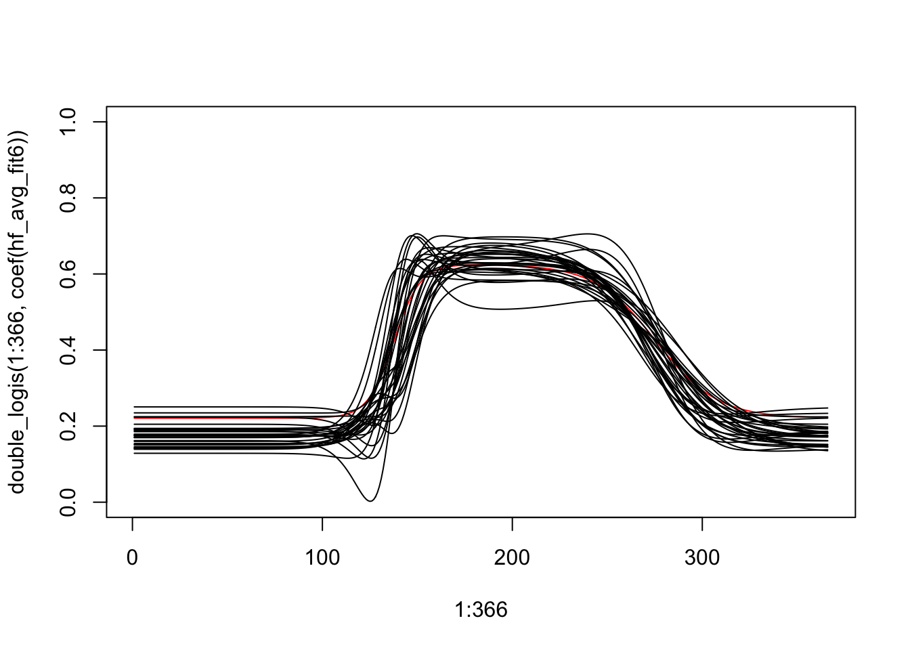

We will attempt to fit the spatial model to the Harvard Forest data. We will import the layer mean data from our previous processing and refit the average model taking care to exclude some abnormal layers that are identified by visual inspection.
For now, let’s do this for a smaller test region. Let’s read-in the hf data, remove bad layers, crop it to a small region, aggregate into a mean value for each layer, fit the average model, linearize the double logistic function around the average model parameter estimates, compute the residuals of the average model, construct the basis function matrix from the gradient of the double logistic function evaluated at the avg model parameter estimates, compute estimates of the delta parameter vectors using the basis function matrix and the avg model residuals, compute estimate of the covariance of the delta parameter vectors using the estimated delta parameter vectors, treat these results as inputs for the spatial Bayesian hierarchical model, estimate the covariate effects at each site.
Read and prep raster data
ReadNcTs <-function(ncfile) { r <-rast(ncfile)# Get time nc_in <-nc_open(ncfile) dates <-ncvar_get(nc_in, "time")nc_close(nc_in)# Assign time to the original image objectif (nchar(dates[1]) ==8) { fm <-"%Y%m%d" } elseif (nchar(dates[1] ==7)) { fm <-"%Y%j" }time(r) <-as.Date(as.character(dates), tryFormats = fm)# Reorder the layers by time r <- r[[order(time(r))]]# Get map projection tif <-rast(list.files(dirname(ncfile), ".tif$", full.names =TRUE)[1])crs(r) <-crs(tif)return(r)}# Complete Datahf <-ReadNcTs("~/ms-web/research/data/harvard_forest/harvard_forest_evi2.nc")hf
# there are 12 extra pixels with NA values for everything. Let's crop those from the spatraster.hf <-crop(hf, ext(1923375, 1926405, 2412500, 2415165))hf
plot(hf[[100]], range =c(0,1))lpix <-50# we will crop again to create a small test region.# hf_test <- crop(hf, ext(1926405 - lpix*30, 1926405, 2412500, 2412500 + lpix*30))hf_test <-crop(hf, ext(1924500, 1924500+lpix*30, 2413000, 2413000+ lpix*30))hf_test
Now we open a connection to the raster data file and compute the residuals that result from the average model. We can also plot the residuals for a specific satellite snapshot, but it is not particularly interesting since we just subtracted a constant value from the average model.
Compute residuals and plot example.
# compute residualshf_test_residuals <-sapp(hf_test, function(x) x -double_logis(yday(time(x)), coef(hf_avg_fit6)))plot(hf_test_residuals[[100]])
Next we use the gradient from the linearization to construct the basis functions.
Using these basis functions and the residuals we will compute point estimates of the \(\boldsymbol\delta_{s,t}\) vectors. Storing this might be interesting.
Prep for delta estimates
p <-6k <-length(unique(layer_agg$year))n <-ncell(hf_test_residuals)# XtX_inv_Xt years <-unique(layer_agg$year)layers_for_year <-vector(mode ="list", length = k)doy_for_year <-vector(mode ="list", length = k)dates <-time(hf_test)for (t in1:k){ layers_for_year[[t]] <-which(year(dates) == years[t]) doy_for_year[[t]] <-yday(dates[layers_for_year[[t]]])}names(layers_for_year) <- yearsnames(doy_for_year) <- years# n <- ncell(hf_test_residuals)delta <-array(NA, dim =c(p,k,n))invert_issue <-rep(0,n)
ran in about 42 min for 89x101 hf full plot. ran in about 2.4 min for 25x25 hf test plot. ran in about 10.25 min for 50x50 hf test plot.
Using the point estimates of \(\widehat{\boldsymbol{\delta}}_{s,t}\) and the region average \(\widehat{\boldsymbol{\theta}}_0\), we can recover \(\widehat{\boldsymbol{\theta}}_{s,t}\) using \(\widehat{\boldsymbol{\theta}}_{s,t} = \widehat{\boldsymbol{\delta}}_{s,t} - \widehat{\boldsymbol{\theta}}_0\).
We can also apply back-transformations to recover values corresponding to the original parameterization of the double-logistic function.
2nd param - 1984, 1996 - a note about parameter 2 - does it even make sense to compare the values here? This parameter may need to be higher to compensate for discounting by green-up and green-down curves that are close together. Is it better to evaluate the max of the double logistic function? If so, how do we quantify the uncertainty there? It no longer makes sense to include it in a linear hierarchical model, right?
k <-37plot(1:366, double_logis(1:366, coef(hf_avg_fit6)), type ="l", col ="red", ylim =c(0,1))for (t in1:k){lines(1:366, double_logis(1:366, coef(hf_avg_fit6)) + X%*%delta[,t,500], type ="l")}
Filter Problematic years
temp_ind <-1:ktemp_ind <- temp_ind[-which(years %in%c(1984, 1985, 1987, 1989, 1990, 1996, 2012))]plot(1:366, double_logis(1:366, coef(hf_avg_fit6)), type ="l", col ="red", ylim =c(0,1))for (t in temp_ind){lines(1:366, double_logis(1:366, coef(hf_avg_fit6)) + X%*%delta[,t,500], type ="l")}

Perhaps we should consider filtering out certain years. 1984, 1985, 1987, 1989, 1990, 1996, 2012 seem to have issues.
Next we’ll want to compute sample covariance matrices for each year from the estimated delta vectors. We’ll only do this for “good years”.
Compute Sample Covariances
k_r <-length(temp_ind)delta_r <- delta[,temp_ind,]#initialize arrayOmega_arr <-array(rep(c(diag(p)), k_r), dim =c(p,p,k_r))inv_Omega_arr <-array(rep(c(diag(p)), k_r), dim =c(p,p,k_r))for (t in1:k_r){ Omega_arr[,,t] <-cov(t(matrix(delta_r[,t,1:n], ncol = n)), use ="complete.obs") inv_Omega_arr[,,t] <-solve(Omega_arr[,,t])}
MCMC set-up. Some considerations: 1) Need to subset data for “good” years. 2) Need to handle special cases that come with real-world data. They are: a) A pixel with no data across all years - needs to be ignored. Cannot estiamte \(\boldsymbol{\beta}_s\) b) A pixel that is isolated for all years - all neighbors are NA. Cannot condition on neighbors. Zero mean? c) A pixel at location s has NA value for a year t - skip d) A pixel at location s has neighbors with NA values for year t - filter NA neighbors. Adjust weights and their sum. e) A pixel at location s has all NA neighbors for year t - ??
MCMC set-up
p <-6q <-2k <- k_rn <-ncell(hf_test)# For now, the only covariate is time in years, centered and scaled.# Consider changing in the future.# Z array is 3 dim - left to right: time, covariate vector length, spatial indexZ <-array(NA, dim=c(k,q,n))for (s in1:n){#Z[,,s] <- matrix(c(rep(1,k),rnorm((q-1)*k,0,1)), ncol = q) Z[,,s] <-matrix(c(rep(1,k), temp_ind), ncol = q)}niters <-600burn <-500# burn <- 0.1*niters# storagekeep_beta_mat <-array(0, dim =c(p*q, n, niters))keep_Lambda <-array(0, dim =c(p*q, p*q, niters))keep_rho_eps <-rep(0, niters) keep_rho_beta <-rep(0, niters)# initial valuesmc_beta_mat <-matrix(0, nrow = p*q, ncol = n)mc_beta_arr <-array(NA, dim =c(p, q, n))mc_beta_arr[1:p,1:q,] <- mc_beta_matmc_Lambda <-diag(p*q)mc_rho_eps <-0.8mc_rho_beta <-0.8keep_beta_mat[,,1] <- mc_beta_matkeep_Lambda[,,1] <- mc_Lambdakeep_rho_eps[1] <- mc_rho_epskeep_rho_beta[1] <- mc_rho_beta# prior parametersnu <- p*q -1+0.1G <-diag(p*q)# M-H tuning parametersMH_beta <-0.1att_beta <-0acc_beta <-0MH_eps <-0.1att_eps <-0acc_eps <-0
Some pre-computes for the model. We need to be careful because now there are missing values that need to be handled.
MCMC pre-computes
# tic()# Pre-compute the first summation term for V in the full conditional for beta.sumt_ZT_Omega_inv_Z <-array(0, dim =c(p*q, p*q, n))for (s in1:n){for (j in1:k){ sumt_ZT_Omega_inv_Z[,,s] <- sumt_ZT_Omega_inv_Z[,,s] +t(kronecker(t(Z[j,,s]),diag(p)))%*%inv_Omega_arr[,,j]%*%kronecker(t(Z[j,,s]), diag(p)) }}# collect the neighbor indices for use within the sampling loop. # probably a better way to do this withough creating a sparse matrix.spat_domain_g <-make_lattice(c(sqrt(n),sqrt(n)), mutual =TRUE)W <-as_adjacency_matrix(spat_domain_g, sparse=0)neighbor_idx <-apply(W, MARGIN =1, function(x) which(x==1))neighbor_weights <-lapply(1:n, function(x) W[x, neighbor_idx[[x]]])# Pre-compute the number of neighbors for each pixel.w_plus <-rowSums(W)D <-diag(w_plus)# pre-compute residuals for the first iteration.Bz <- delta_rfor (j in1:k){for (s in1:n){ Bz[,j,s] <- mc_beta_arr[,,s]%*%Z[j,,s] }}resid_r <- delta_r - Bz# loglike functions for Metropolis-Hastings steps# this assumes that we will be able to estiamte a beta for every pixel. Not always the case. . .rho_beta_loglike <-function(rho, beta_mat, neighbor_idx, neighbor_weights, w_plus, inv_Lambda){ temp1 <-0 temp2 <-0for (s in1:n){ beta_tilde <- (beta_mat[,neighbor_idx[[s]]]%*%neighbor_weights[[s]])/w_plus[s] temp1 <- temp1 + w_plus[s]*(t(beta_tilde)%*%inv_Lambda%*%beta_tilde) temp2 <- temp2 + w_plus[s]*(t(beta_mat[,s])%*%inv_Lambda%*%beta_tilde) }return(-0.5*((rho^2)*temp1 -2*rho*temp2))}rho_eps_loglike <-function(rho, delta, Bz, resid, inv_Omega_arr, neighbor_idx, neighbor_weights, w_plus){# I don't think this is used anywhere.# dbz <- delta + Bz temp1 <-0 temp2 <-0for (s in1:n){for (t in1:k){# skip if value is missing.if (!is.na(delta[1,t,s])){# must be careful to remove NAs and adjust w_plus accordingly, count_NA_neighbors <-sum(is.na(delta[1,t,neighbor_idx[[s]]]))if (count_NA_neighbors ==0){ r <- resid[,t,neighbor_idx[[s]]]%*%neighbor_weights[[s]] temp1 <- temp1 + (t(r)%*%inv_Omega_arr[,,t]%*%r)*w_plus[s] temp2 <- temp2 + (t(delta[,t,s]) +t(Bz[,t,s]))%*%inv_Omega_arr[,,t]%*%r } elseif (count_NA_neighbors < w_plus[s]) { temp_w_plus <- w_plus[s] - count_NA_neighbors r <-as.matrix(rowMeans(resid[,1,neighbor_idx[[s]]], na.rm = T), ncol=1) temp1 <- temp1 + (t(r)%*%inv_Omega_arr[,,t]%*%r)*temp_w_plus temp2 <- temp2 + (t(delta[,t,s]) +t(Bz[,t,s]))%*%inv_Omega_arr[,,t]%*%r } else {# do nothing - here's no neighbors we can't compute neighbor residuals. } } } }return(-0.5*((rho^2)*temp1 -2*rho*temp2))}
scratch.
Scratch.
# we need to know the good neighbors for each pixel in each year. . .s <-1s <-248delta_r[1,1,neighbor_idx[[s]]]!is.na(delta_r[1,1,neighbor_idx[[s]]])good_neighbors <-vector(mode ="list", k)for (t in1:k){ good_temp <-vector(mode ="list", n)for (s in1:n){ good_temp[[s]] <- neighbor_idx[[s]][!is.na(delta_r[1,t,neighbor_idx[[s]]])] }names(good_temp) <-1:n good_neighbors[[t]] <- good_temp}names(good_neighbors) <-1:ks <-248delta_r[,1,neighbor_idx[[s]]]as.matrix(rowMeans(delta_r[,1,neighbor_idx[[s]]], na.rm = T), ncol=1) neighbor_idx[1]neighbor_weights[1]
Now for the sampling loop.
MCMC sampling loop
tic()for (iter in2:niters){# computing residuals needed in full conditional for beta - M.# probably a better way to do this. inv_mc_Lambda <-solve(mc_Lambda)# sample beta_sfor (s in1:n){# s <- 147# if there were a pixel with no data over all years, then this would be the place to skip them. V <- w_plus[s]*sumt_ZT_Omega_inv_Z[,,s] + w_plus[s]*inv_mc_Lambda# revisit for efficiency temp <-0for (j in1:k){# skip if the value of delta_r[,t,s] is missing (NA)if(!is.na(delta_r[1,j,s])){# Check if there are neighbors of pixel s,t with missing values. if so, adjust calculation. count_NA_neighbors <-sum(is.na(delta_r[1,j,neighbor_idx[[s]]]))if (count_NA_neighbors ==0){ # all neighbors are good) temp <- temp +t(kronecker(t(Z[j, ,s]),diag(p))) %*% inv_Omega_arr[ , ,j] %*% (mc_rho_eps * resid_r[ ,j,neighbor_idx[[s]]] %*% neighbor_weights[[s]] + w_plus[s] * delta_r[ ,j,s]) } elseif (count_NA_neighbors < w_plus[s]){ # some but not all neighbors NA. temp_w_plus <- w_plus[s] - count_NA_neighbors# TODO: the last line here uses the rowMeans function and assumes equally weighted neighbors. Will need to change if we decide# to weight neighbors differently. temp <- temp +t(kronecker(t(Z[j, ,s]),diag(p))) %*% inv_Omega_arr[ , ,j] %*% (mc_rho_eps *as.matrix(rowMeans(delta_r[,1,neighbor_idx[[s]]], na.rm = T), ncol=1) + temp_w_plus * delta_r[ ,j,s]) } else { # all neighbors NA temp <- temp +t(kronecker(t(Z[j, ,s]),diag(p))) %*% inv_Omega_arr[ , ,j] %*% (delta_r[ ,j,s]) } } } M <- temp + mc_rho_beta*(inv_mc_Lambda%*%(mc_beta_mat[,neighbor_idx[[s]]]%*%neighbor_weights[[s]])) V_inv <-chol2inv(chol(V)) mc_beta_mat[,s] <- V_inv%*%M+t(chol(V_inv))%*%rnorm(p*q) } mc_beta_arr[1:p,1:q,] <- mc_beta_mat# sample Lambda# change this to add the D diagonal straight to rho_beta*W H <- mc_beta_mat%*%(D - mc_rho_beta*W)%*%t(mc_beta_mat) mc_Lambda <- MCMCpack::riwish(nu + n, G + H)# compute residuals Bz <- delta_rfor (j in1:k){for (s in1:n){ Bz[,j,s] <- mc_beta_arr[,,s]%*%Z[j,,s] } } resid_r <- delta_r - Bz# sample rho_eps att_eps <- att_eps +1 can <-rtnorm(1, mc_rho_eps, MH_eps, a =0, b =1) R <-rho_eps_loglike(can, delta_r, Bz, resid_r, inv_Omega_arr, neighbor_idx, neighbor_weights, w_plus) -# Likelihoodrho_eps_loglike(mc_rho_eps, delta_r, Bz, resid_r, inv_Omega_arr, neighbor_idx, neighbor_weights, w_plus) +dtnorm(mc_rho_eps, mean = can , sd = MH_eps, a =0, b =1, log = T) -# M-H adjustmentdtnorm(can, mean = mc_rho_eps , sd = MH_eps, a =0, b =1, log = T)if(log(runif(1)) < R){ acc_eps <- acc_eps +1 mc_rho_eps <- can }# sample rho_beta att_beta <- att_beta +1 can <-rtnorm(1, mc_rho_beta, MH_beta, a =0, b =1) R <-rho_beta_loglike(can, mc_beta_mat, neighbor_idx, neighbor_weights, w_plus, inv_mc_Lambda) -# Likelihoodrho_beta_loglike(mc_rho_beta, mc_beta_mat, neighbor_idx, neighbor_weights, w_plus, inv_mc_Lambda) +dtnorm(mc_rho_beta, mean = can , sd = MH_beta, a =0, b =1, log = T) -# M-H adjustmentdtnorm(can, mean = mc_rho_beta , sd = MH_beta, a =0, b =1, log = T)if(log(runif(1)) < R){ acc_beta <- acc_beta +1 mc_rho_beta <- can }# tuningif(iter < burn){if(att_eps >30){if(acc_eps/att_eps <0.3){MH_eps <- MH_eps*0.8}if(acc_eps/att_eps >0.5){MH_eps <- MH_eps*1.2} acc_eps <- att_eps <-0 } }if(iter < burn){if(att_beta >30){if(acc_beta/att_beta <0.3){MH_beta <- MH_beta*0.8}if(acc_beta/att_beta >0.5){MH_beta <- MH_beta*1.2} acc_beta <- att_beta <-0print(iter) } } keep_beta_mat[,,iter] <- mc_beta_mat keep_Lambda[,,iter] <- mc_Lambda keep_rho_eps[iter] <- mc_rho_eps keep_rho_beta[iter] <- mc_rho_beta}toc()
ggplot(spat_domain) +geom_tile(aes(x, y, fill=beta25)) +scale_y_reverse() +scale_fill_gradientn(colors =viridis(10),name =bquote(beta["s,2,3"])) +coord_fixed() +theme_void()
Traceplots for Lambda (broken labels)
burn <-2par(mfrow =c(2,2))# off-diagonalfor (i in1:(p*q)){for (j in i:(p*q)){ tsub <-paste0(i,j)plot(burn:niters, keep_Lambda[i,j,burn:niters], type ="l",xlab ="iteration",ylab =bquote(Lambda[.(tsub)])) }mtext(bquote(Lambda ~"Matrix"), side =3, line =-3, outer =TRUE)}
Traceplots for CAR propriety params
burn <-100par(mfrow=c(1,2))plot(burn:niters, keep_rho_beta[burn:niters], type ="l",xlab ="iteration",ylab =bquote(rho[beta]))plot(burn:niters, keep_rho_eps[burn:niters], type ="l",xlab ="iteration",ylab =bquote(rho["\u03F5"]))